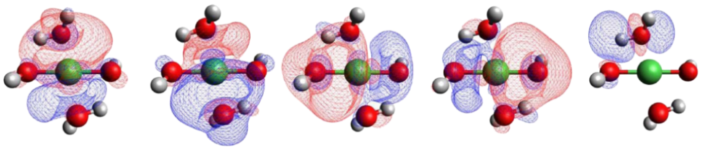
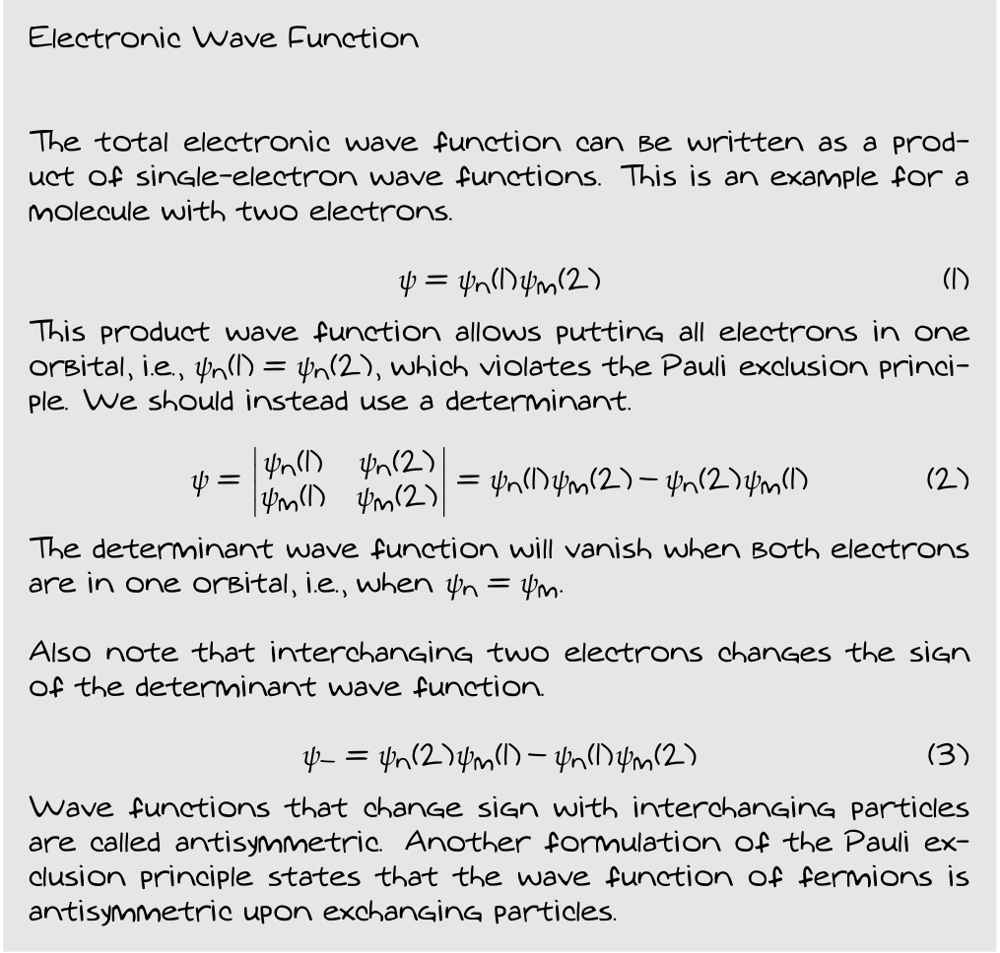

Quantum chemistry uses quantum mechanics to describe molecules and materials. This is different from how we typically describe molecules in chemistry. For instance, we use notations such as \( \text{C}_{10} \text{H}_{12} \text{O}_2 \) to describes the atomic composition of Eugenol without providing more information. We sometimes draw the molecule and provide information about the arrangement of the atoms, if we want to be more precise.
Such representations are classical representations of the Eugenol molecule. So, what is the quantum mechanical description of Eugenol? The answer is actually pretty simple! In quantum, molecules are described by a mathematical function called wave function. The wave function contains all the information that can be determined about a molecule, according to the first postulate of quantum mechanics [1]. For now, we just give this function the symbol \( \Psi \) without exactly defining what it is.
An important fact about the wave function is that we cannot directly measure it in the same way that we can measure properties such as mass, energy or distance. This could be a bit disappointing but the good news is that the wave function is closely related to some measurable properties such as electron density. To be more precise, the wave function is related to the probability of finding objects such as electrons at specific positions. Now that we have an understanding of the wave function, let’s see how we typically obtain the wave function for a molecule. This is where quantum chemistry is going to help us.
Computing the exact wave function for molecules is a challenging task. We need to simplify the problem by using some approximations. For instance, we can assume that the positions of nuclei in our molecule are fixed such that we can exclude them from the wave function. This is called the Born-Oppenheimer approximation. So we only focus on the electronic wave function which is simpler and more interesting for us anyways. Remember that nuclei are heavy enough to be safely treated classically in most cases.
Now our molecule is just a system of electrons moving around frozen nuclei. This system is still too complicated so we do another trick. We obtain separate wave functions for each electron and then combine all of them together to obtain the total electronic wave function. We start by assigning a “rough” wave function to each electron. Then, we optimize these wave functions considering that each electron feels an “average” repulsion from all other electrons. The first round of optimizations gives us slightly more accurate wave functions. Now we replace the initial wave functions with these slightly optimized ones and perform the optimization for one more round. This gives us even better wave functions. We continue the optimization process until the wave functions do not change any more. Now we have a set of fully optimized “single-electron wave functions” which we know them as “molecular orbitals”. Here are some examples for nickel hydroxide and water [2].

Each molecular orbitals describes the distribution of an electron over the entire molecule. These optimized orbitals already account for the average presence of other electrons and the approach we explained for getting them is called the Hartree-Fock method. Now that we have our single-electron wave functions, let’s see how we can get the total electronic wave function for our system.
Remember that a molecular orbital describes the probability of finding an electron in a region specified by the shape of the orbital. So, if we have the orbitals for individual electrons, how can we combine them to get the full description for all electrons at the same time? The answer is again simple: by multiplying them together. To understand this, let’s look at a very simple example of tossing two coins.
When we toss the first coin, we have a probability of 50% or ½ to get heads. For the second coin we have the exact same probability of ½ to get heads. But if we toss both of them at the same time, the probability of getting two heads is 25% or ¼ which is just ½ \( \times \) ½.
For electrons, instead of two equally probable options, we have all the possible places that the electrons can be with probabilities determined by their wave functions. So we can argue that the probability of finding all electrons in specific positions is determined by the product of their individual wave functions. So the total electronic wave function is simply a product of the single-electron wave functions. This sounds nice but there is another issue! The product does not satisfy the Pauli exclusion principle. Let’s see why and then fix that.
The Pauli exclusion principle states that particles such as electrons cannot occupy the same state at the same time. This is just a fundamental property of nature and our wave function should respect it. The product state we obtained has no fundamental restriction to prevent putting all electrons in a single molecular orbital. For instance, I can assume that all of the electrons are in the first orbital and then create the product wave function by just multiplying my first orbital as many times as the number of electrons. This should not be permitted. The solution is to put a very important restriction: the electronic wave function must change sign if we exchange two electrons. Obviously, the product state does not satisfy this as I can just put all of the electrons in one single orbital and exchanging them does not change anything. Wave functions that change sign under exchange of particles are called antisymmetric. In fact, electrons and particles like them must have antisymmetric wave functions. A mathematical representation that makes the wave functions antisymmetric is a determinant. So we upgrade our wave function to be a determinant instead of a product and we will have a “correct” wave function. See the following note for more details.

The correct wave function we obtained is not yet, unfortunately, the “exact” wave function of my molecule. The reason is related to the initial estimates we used for our constructing molecular orbitals. We can have many possible such estimates and therefore can have many possible optimized molecular orbitals. So which one should we choose? The answer is all! We should build our determinants from all possible combinations of reasonable molecular orbitals. So our exact wave function is actually a combination of all such possible determinants with contribution weights that are not known a priori. If we can compute the precise contributions then we will have our exact wave function. Quantum chemistry provides several methods for computing the contribution of determinants to the exact wave function of a given molecule. We have discussed these methods in the methods post.
[1] I. N. Levine, Quantum Chemistry, Pearson, 2014.
[2] S. Jahangiri, N. J. Mosey, J. Phys. Chem. C, 122, 45, 25785, 2018.
soranjh.github.io